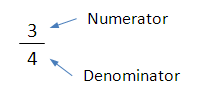

A fraction is two quantities written one above the other, that shows how much of a a whole thing we have.
For example we may have three quarters of a pizza:
In the above, we divided the pizza into 4 equal parts (quarters), and then kept three of them. Thus "three quarters".

A way to remember which is which: Numerator is similar to the word Number. So it tells the Number of partsSimply divide the top by the bottom using a calculator. So in the example below, to convert the fraction to decimal, divide the top (4) by the bottom (5) to get the result 0.8: In fact, we often read a fraction as a division. In this example, we could read it as 4 divided by 5.
A proper fraction is one where the top is smaller than the bottom, such as When converted to a decimal, proper fraction are always less than 1.
An improper fraction is the reverse, where the top is larger than the bottom, such as
As often happens in math, some words have meanings that differ from their everyday use. Here, 'improper' does not mean 'wrong' or 'unseemly'. It is simply the opposite of a 'proper' fraction. Another example: see 'vulgar fraction' below.
An improper fraction can be 'reduced'. In the example above, six quarters of a pizza is more than one pizza. In fact, if we divide the fraction to make it a decimal, or one and a half pizzas.
Another name for the ordinary fraction we use above, where top and bottom are simple decimal numbers. Such as Usually these are just referred to as 'fractions'.
Sometimes, a fraction is just another way of saying 'divide'. For example is simply a way of saying 'two divided by seven'. This is the same as writing
This happens a lot in algebra, when we divide whole expressions by something. For example which comes out to
The top and/or bottom can both be algebra expressions. For example
Fractions can also be written as percentages. When we say "50 percent" - written as 50%, we mean that many per hundred. So 50% of the students means 50 out of each hundred students or one half the students. For more on this, and how to convert back and forth between fractions and percentages, see Percent definition.
When typing fractions into a computer, it is difficult to format them properly, so often the 'slash' character is used. So instead of we write